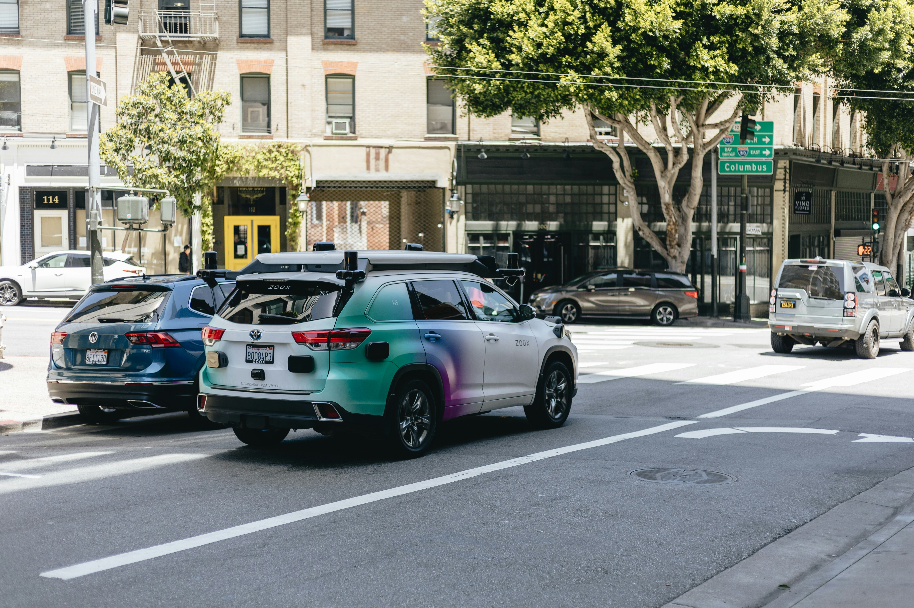
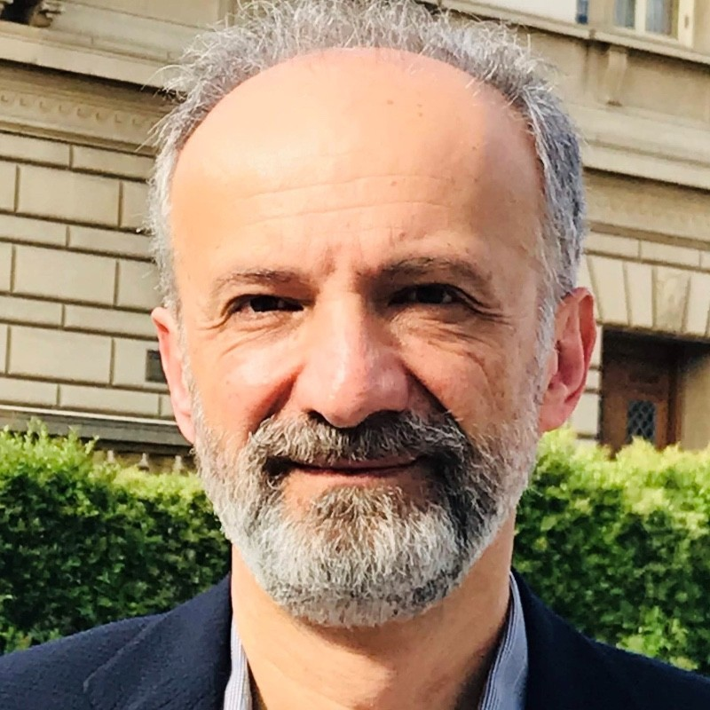

About the workshop

Speakers

Program
The workshop will feature prominent speakers, and contributions from the intelligent vehicles and mobile robotics community. The workshop is happening in-person in Pittsburgh, USA. Additionally we welcome participants to listen and contribute virtually via zoom.
| Time (EDT) | Talk Title | Speaker |
|---|---|---|
| 13:30-13:50 | Keynote Talk 1: Autonomous Vehicles on the Edge: Autonomous Racing | Prof. Johannes Betz |
| 13:50-14:10 |
Keynote Talk 2: Coordination and Harmonization of Vehicles under Mixed Human–Machine AutonomyAbstract: This talk presents some recent advances in the coordination and harmonization of ground vehicles operating under mixed human–machine autonomy, where human-driven, partially automated, and fully autonomous vehicles coexist within shared traffic environments. The talk will discuss control, optimization, coordination, and learning frameworks that enable cooperative interactions among heterogeneous agents while accounting for human behavior, uncertainty, and risks. Emphasis will be placed on achieving safe, efficient, and human-compatible mobility through distributed coordination, personalized automation, and traffic-level harmonization strategies. Applications to connected and automated vehicles, intelligent transportation systems, and emerging mobility ecosystems will also be highlighted. Bio: Junmin Wang is the Fletcher Stuckey Pratt Chair Professor in Engineering at University of Texas at Austin. He began his academic career at Ohio State University in 2008, where he was early promoted to Associate Professor in 2013 and then very early promoted to Full Professor in 2016. In 2018, he joined UT Austin as the Accenture Endowed Professor. Prior to academia, he gained five years of industry experience at Southwest Research Institute. Prof. Wang’s research spans control, modeling, estimation, optimization, diagnosis, and AI for dynamical systems, with applications in automotive systems, smart and sustainable mobility, robotics, human-centric automation, and cyber-physical systems. Dr. Wang has authored or co-authored more than 420 peer-reviewed publications including 207 journal articles and holds 13 U.S. patents. He is the recipient of numerous international and national honors and awards, including the ASME Charles Stark Draper Innovative Practice Award, IEEE Best Vehicular Electronics Paper Award, IEEE Andrew Sage Best Transactions Paper Award, IEEE Transactions on Fuzzy Systems Outstanding Paper Award, NSF-CAREER Award, SAE International Vincent Bendix Automotive Electronics Engineering Award, and ONR Young Investigator Award. Prof. Wang has also been honored as a Fulbright Distinguished Scholar by U.S. Department of State, Distinguished Lecturer for the IEEE Intelligent Transportation Systems Society, IEEE Industrial Electronics Society, the IEEE Vehicular Technology Society, and the IEEE Systems, Man, and Cybernetics Society. He is an SAE Fellow, ASME Fellow, and IEEE Fellow. |
Prof. Junmin Wang |
| 14:10-14:30 |
Keynote Talk 3: Spatial AI for Ground Vehicles & Robots in the WildAbstract: This talk introduces the latest development of spatial AI-based autonomous navigation technologies for autonomous vehicles such as mobile robots, legged robots, and drones in the wild. The actual cases developed by KAIST Urban Robotics Lab will be introduced. Specifically, we present various spatial AI frameworks for mobile robots, drones, and legged robots in rough terrains. The deep reinforcement learning-based blind locomotion technology called DreamWaQ and DreamWaQ++ will also be included. Bio: Prof. Hyun Myung received the B.S., M.S., and Ph.D. degrees in electrical engineering from the Korea Advanced Institute of Science and Technology (KAIST), Daejeon, South Korea, in 1992, 1994, and 1998, respectively. He was a Senior Researcher with the Electronics and Telecommunications Research Institute, Daejeon, from 1998 to 2002, a CTO and the Director with the Digital Contents Research Laboratory, Emersys Corporation, Daejeon, from 2002 to 2003, and a Principal Researcher with the Samsung Advanced Institute of Technology, Yongin, Korea, from 2003 to 2008. Since 2008, he has been a Professor with the Department of Civil and Environmental Engineering, KAIST, and he has served as the Chief of the KAIST Robotics Program. From 2019, he is a Professor with the School of Electrical Engineering. He led the development of the world-first robots such as JEROS (Jellyfish removal robot), CAROS (wall-climbing drone), Mole-bot, and DreamWaQer (Blind-walking quadruped robot). He received Prime Minister’s Citation Award at 2018 Nat’l Science Day, Champion in IEEE ICRA'23 QRC (Autonomous Quadruped Robot Challenge), 1st place in IEEE ICRA'25 NSS Challenge, CES (Consumer Electronics Show)'23 Innovation Award, 1st place in CVPR'26 NSS Challenge, and 2026 KAIST Research Grand Prize. His current research interests include autonomous robot navigation, Spatial AI, SLAM (simultaneous localization and mapping), and swarm robots. |
Prof. Hyun Myung |
| 14:30-14:50 |
Keynote Talk 4: Autonomous Teams: Where Learning Meets ControlAbstract: At the frontier of autonomy lies a fundamental question: how can we design teams of agents that reason, act, learn, and memorize cooperatively in dynamic, uncertain environments? In this talk, I will present a theoretical framework grounded in team theory, a mathematical formalism for decentralized stochastic control problems in which multiple agents with asymmetric information cooperate toward a shared objective. I will discuss recent structural results for sequential dynamic team problems with nonclassical information structures, showing how to construct information states that remain invariant to control strategies, thereby enabling dynamic programming decompositions in decentralized settings. These results can aim toward a unifying scientific foundation—what I refer to as the Science of Autonomous Team Intelligence—where teams of agents, whether robotic, vehicular, or human–machine, can reason, act, learn, and memorize collectively, achieving coherent and safe behavior in complex, uncertain environments. Bio: Andreas Malikopoulos is a Professor in the School of Civil & Environmental Engineering and the Director of the Information and Decision Science Lab at Cornell University. He also holds courtesy appointments with the Cornell Robotics program, Applied Mathematics, Systems Engineering program, Electrical and Computer Engineering, and Mechanical Engineering. Prior to these appointments, he was the Terri Connor Kelly and John Kelly Career Development Professor in the Department of Mechanical Engineering (2017-2023) and the founding Director of the Sociotechnical Systems Center (2019-2023) at the University of Delaware (UD). Before he joined UD, he was the Alvin M. Weinberg Fellow (2010-2017) in the Energy & Transportation Science Division at Oak Ridge National Laboratory (ORNL), the Deputy Director of the Urban Dynamics Institute (2014-2017) at ORNL, and a Senior Researcher in General Motors Global Research & Development (2008-2010). He received a Diploma from the National Technical University of Athens, Greece, and his M.S. and Ph.D. degrees from the University of Michigan, Ann Arbor, in 2004 and 2008, respectively, all in Mechanical Engineering. His research interests are grounded at the intersection of learning and control to enable systems—whether vehicles, robots, or large-scale infrastructures—to operate autonomously and achieve near-optimal performance while safely adapting to and interacting with dynamic environments. His work integrates decision-theoretic foundations with learning-based methods to endow engineered systems with the capability to reason, learn, and act in real time. Dr. Malikopoulos is the recipient of several prizes and awards, including the 2007 Dare to Dream Opportunity Grant from the University of Michigan Ross School of Business, the 2007 University of Michigan Teaching Fellow, the 2010 Alvin M. Weinberg Fellowship, the 2019 IEEE Intelligent Transportation Systems Young Researcher Award, the 2020 UD’s College of Engineering Outstanding Junior Faculty Award, and the 2026 IEEE ITS Oustransding Application Award. He has been selected by the National Academy of Engineering to participate in the 2010 German-American Frontiers of Engineering (FOE) Symposium and organize a session on transportation at the 2016 European-American FOE Symposium. He has also been selected as a 2012 Kavli Frontiers of Science Scholar by the National Academy of Sciences. Dr. Malikopoulos is an Associate Editor of Automatica and IEEE Transactions on Automatic Control, and a Senior Editor of IEEE Transactions on Intelligent Transportation Systems. He is a Senior Member of the IEEE, a Fellow of the ASME, an elected member of the Board of Governors of the IEEE Intelligent Transportation Systems Society (ITSS), and a Distinguished Lecturer of the ITSS. |
Prof. Andreas Malikopoulos |
| 14:50-15:10 |
Keynote Talk 5: The Science of Safety: How Waymo Research Advances Trustworthy Autonomous DrivingAbstract: Waymo is committed to advancing the science of autonomous vehicle safety through a multi-faceted research program. This overview will cover our data-driven approaches to comparing the safety performance of the Waymo Driver with human driving, emphasizing the importance of robust benchmarking and statistical methods. We will explore our research into understanding and modeling human behavior in diverse traffic scenarios, which is crucial for developing an autonomous system that can navigate complex social interactions on the road. Additionally, we will discuss our work on risk assessment and how these various research pillars collectively support our efforts to build and validate a trustworthy autonomous system, aligning with our commitment to safety and Vision Zero. Bio: Dr. Scott Schnelle is a Safety Best Practice Specialist at Waymo, where he focuses on enhancing the safety assurance of Automated Driving Systems (ADS). Leveraging over a decade of experience in ADAS and ADS development, testing, and safety, including a former role as a federal engineer at NHTSA, Dr. Schnelle's work encompasses safety methodologies, risk assessment, safety metrics, and scenario-based testing. He actively contributes to industry standards, notably chairing the IEEE P3321 task force. Dr. Schnelle holds a Ph.D. in Mechanical Engineering from The Ohio State University. |
Dr. Scott Schnelle |
| 15:10-15:30 | Coffee break | |
| 15:30-15:50 | Keynote Talk 6: Enhance the Traversability of Off-Road Ground Vehicles through Large Multimodal Models (LMMs) based Driving Assistance | Prof. Yunyi Jia |
| 15:50-16:10 | Keynote Talk 7 | Dr. Youngwoo Seo |
| 16:10-16:30 |
Keynote Talk 8: Key roles of fast machine proprioceptive feedback and fast instability in automotive motion controlAbstract: Humans’ subconscious capabilities are essential for safe motion. Our very fast proprioceptive (muscle) feedback synchronizes limbs for walking and helps recovery in case of slipping or stumbling. Recently developed Control Barrier Function (CBF) based algorithms include a proprioceptive-feedback-like mechanism that serves a similar function for autonomous agents. Instead of human limbs or muscle groups, the entities are automated vehicles executing highway merges and interchanges. Addition of predictor-corrector loops to a CBF safety filter produced several unexpected advantages including (a) ability to reconcile disagreements between independent agents, (b) creation of exponential instability for agility and gridlock avoidance, and (c) resilience to unexpected events (e.g., mechanical failures). The CBF predictor-corrector loops resemble human proprioceptive feedback and are referred to as machine proprioceptive feedback (MPF). The inter-agent instability delivers efficiency, similar to human unstable gait producing efficient walk. It turns out that a higher MPF speed and a higher rate of inter-agent instability, controlled with separate tuning knobs, both improve resilience. While the results are illustrated with highway driving, one could conjecture that the algorithm properties transfer to other multi-agent systems including robots and UAVs. Bio: Mrdjan Jankovic received his PhD degree from Washington University, St. Louis in 1992. He held postdoctoral positions with Washington University and UC Santa Barbara. In 1995 he joined Ford Research where, until Dec. 2022, he worked as a Senior Technical Leader on development of control technologies for powertrain and driver assist applications. From Feb. 2024 to May 2026, Dr. Jankovic was a Staff engineer at Southwest Research Institute developing algorithm for negotiation in multi-agent systems. Dr. Jankovic has over 150 technical publications and more than 100 US patents. He received major awards from IFAC, AACC, IEEE and Ford. Dr. Jankovic is a Fellow of the IEEE and a member of the US National Academy of Engineering. |
Dr. Mrdjan Jankovic |
| 16:30-17:00 | Workshop Paper Spotlight | |
| 17:00-17:30 | Q&A Session | Guided Q&A Session and Closing |
Call for Papers
This workshop is intended to identify the challenges associated with the software development of autonomous vehicles and to foster discussion about how current research can address them. We invited papers for submission to the workshop related to the topics of ITS, autonomous vehicles, robotics, embodied AI, motion planning, perception and modeling.
Papers to IEEE/RSJ IROS 2026 can be submitted on the [OpenReview Portal]. The page limit is 8 pages. The page limit includes the references, appendixes, etc. All papers must be submitted in PDF (up to 6MB) and must follow the IROS double column format. Information and templates are available [here].
· Submission Deadline: Sep 1, 2026
· Notification of Paper Acceptance: Sep 10, 2026
· Venue Start Date: Sep 27, 2026
We are pleased to announce that our workshop will be collaborating with the Journal of Intelligent & Robotic Systems to organize a Special Issue. Selected papers presented at the workshop will be invited for submission to this Special Issue. Extended versions of the submitted works will undergo a rigorous peer-review process for potential publication.
Accepted Papers and Presentations
The following papers have been accepted for the IROS 2026 Workshop and will be presented in the spotlight session.
1. TBA
2. TBA
3. TBA
4. TBA
5. TBA
6. TBA
7. TBA
8. TBA
9. TBA
10. TBA
Workshop Poster
Organizers
Assistant Professor
Department of Mobility Systems Engineering
Technical University of Munich
Professor
School of Electrical Engineering
KAIST (Korea Advanced Institute of Science and Technology)
Sponsorship and Endorsement

IEEE Robotics and Automation Society(RAS) Technical Committee support.